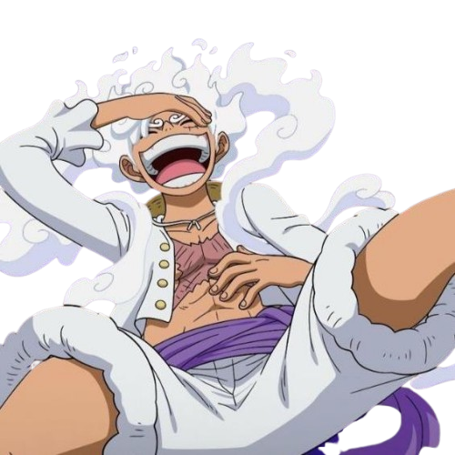

Gear 5: The Awakening
Luffy's most iconic transformation—Gear 5—unleashes a whimsical, reality-bending power fueled by freedom and laughter. As the Sun God Nika, he dances around enemies with joy and overwhelming strength.
Luffy's most iconic transformation—Gear 5—unleashes a whimsical, reality-bending power fueled by freedom and laughter. As the Sun God Nika, he dances around enemies with joy and overwhelming strength.
Behind every great captain is a legendary crew. From Zoro’s blades to Nami’s navigation, Sanji’s kicks to Chopper’s care—Luffy sails with a family he’d risk it all for.


Whether punching Celestial Dragons or rescuing kingdoms, Luffy never backs down when freedom is at stake. His heart, not just his haki, is what makes him the Pirate King the world needs.